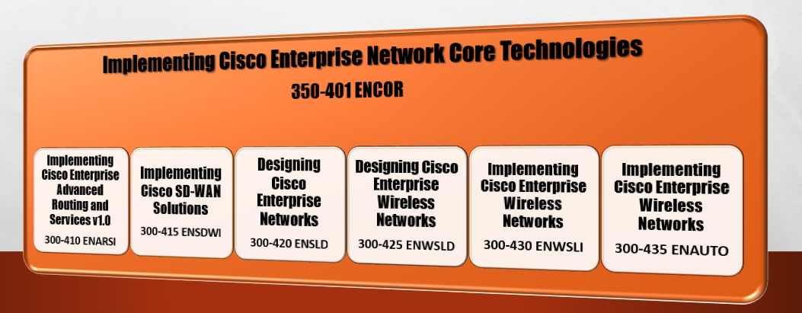

La certificación CCNP Enterprise v8.0 exige la aprobación de un examen básico y un examen de concentración de su elección.
* Las certificaciones de nivel profesional no tienen ahora ningún prerrequisito; por lo que no se necesita una certificación de nivel asociado.
* El período de certificación y recertificación se mantiene en 3 años.
* Se a integrado un sistema de créditos que facilita reconocer sus habilidades al margen de los exámenes de certificación que permite lograr la recertificación
El programa de CCNP para servicios y enrutamiento avanzado em tecnologías de redes empresariales abarcan dos cursos enfocado en la preparación para los exámenes 350-401 ENCOR y 300-410 ENARSI.
Los dos cursos de este plan de estudios de CCNP Enterprise Versión 8.0 facilitan a los participantes los conocimientos y las habilidades necesarios para configurar, operar y solucionar problemas de redes empresariales a gran escala. Los cursos abarcan una amplia gama de temas de enrutamiento, conmutación e inalámbricos, junto con las mejores prácticas de seguridad utilizadas en redes digitales impulsadas por software, permitiendo desarrollar los conocimiento y habilidades para configurar, gestionar y solucionar problemas de redes empresariales a gran escala.
Examen ENCOR 350-401: Ir al contenido.
Examen ENARSI 350-410: Ir al contenido.
Arquitecturas de Reenvio
La conmutación o reenvio de paquetes IP es un proceso para recibir un paquete IP en una interfaz de entrada y determinar si reenviar el paquete a una interfaz de salida o descartarlo. Cisco desarrollo la conmutación rápida y Cisco Express Forwarding (CEF) para optimizar el proceso de conmutación y asi los enrutadores puedan manejar grandes volúmenes de paquetes.
La conmutación de procesos (conmutación de software o ruta lenta), es un mecanismo de conmutación en el que el CPU está a cargo de la conmutación de paquetes. Dicha conmutación resulta más lenta que la conmutación realizada en hardware. El proceso NetIO está diseñado para manejar un porcentaje muy pequeño del tráfico manejado por el sistema. Los paquetes se conmutan por hardware siempre que sea posible.
CEF (Cisco Express Forwarding) es un mecanismo de conmutación desarrollado por Cisco, empleado por defecto en todas sus plataformas que utilizan circuitos integrados específicos de aplicaciones (ASIC) y unidades de procesamiento de red (NPU) especializados para un alto rendimiento de paquetes (enrutadores basados en hardware).
TCAM (Memoria direccionable de contenido ternario) permite en un conmutador la comparación y evaluación de un paquete en más de un campo, donde sus entradas se almacenan en formato de valor, máscara y resultado (VMR) opera en hardware, proporcionando un procesamiento y una escalabilidad más rápidos que la conmutación de procesos.
Forwarding Architectures: Ir al contenido.
Multiple Spanning Tree Protocol
Mediante el estándar 802.1D solo permitía una instancia STP para toda una red de switch. Lo que limitaba la carga del tráfico compartido entre enlaces bloqueando VLAN específicas en una línea y bloqueando otras VLAN en enlaces alternativos. MST (Protocolo de árbol de expansión múltiple) asigna una o varias VLAN a una instancia de STP.
MST mapea una o varias VLAN en un árbol STP, llamado instancia de MST (MSTI). Un grupo de conmutadores MST con la misma configuración de alto nivel se conoce como región MST, donde se incorpora mecanismos para que aparezca un único conmutador virtual para conmutadores externos.
MST: Ir al contenido.
Virtual Routing and Forwarding
VRF (Enrutamiento y reenvío virtual) es una tecnología que crea enrutadores virtuales separados en un enrutador físico. Las interfaces de enrutador, las tablas de enrutamiento y las tablas de reenvío están completamente aisladas entre los VRF, lo que evita que el tráfico de un VRF se reenvíe a otro VRF.
Todas las interfaces del enrutador pertenecen al VRF global hasta que se asignan específicamente a un VRF definido por el usuario. El VRF global es idéntico a la tabla de enrutamiento normal de los enrutadores que no son VRF.
El VRF de cada enrutador mantiene una tabla de enrutamiento separada; es posible permitir la superposición de rangos de direcciones IP. VRF crea segmentación entre interfaces de red, subinterfaces de red, direcciones IP y tablas de enrutamiento.
La configuración de VRF en un enrutador garantiza que las rutas estén aisladas, la seguridad de la red aumente y no sea necesario cifrar el tráfico en la red para mantener la privacidad entre las instancias de VRF.
VRF: Ir al contenido.
Calculo de Metrica EIGRP
El cálculo de métricas es un componente crítico para el protocolo de enrutamiento EIGRP; emplea múltiples factores como ancho de banda y retraso de forma predeterminada, pero también puede incluir carga de interfaz y confiabilidad para calcular la métrica de una ruta.
EIGRP usa valores K para definir qué factores usa la fórmula y el impacto asociado de un factor al calcular la métrica.
La velocidad del enlace se obtiene del ancho de banda de la interfaz configurada en una interfaz.
El retardo es la medida total de demora en la ruta, medida en decenas de microsegundos (μs).
Metrica EIGRP: Ir al contenido.